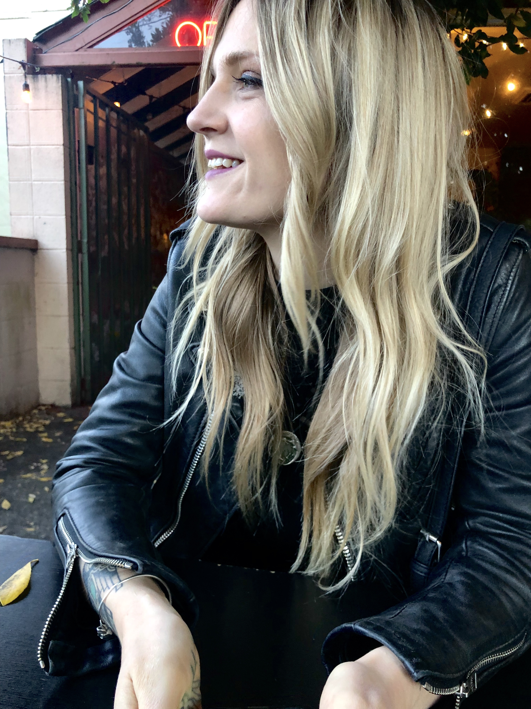
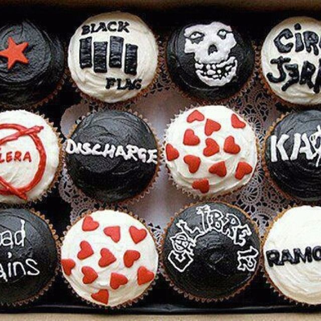
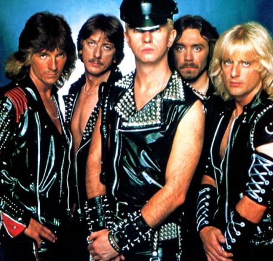

Jozy Kinnaman
jozypants@gmail.com
503.720.8800
Projects

Cupcakes of Death!
A heavy metal cupcake website demonstrating the versatility of css.
Stack: HTML, CSS
Mr.Roboger's Neighborhood'
An interactive webpage that let's you enter in numbers to communicate with a robot.
Stack: HTML, CSS, JavaScript, JQuery

Judas Priest Band Site
A fan site for the band Judas Priest that uses CSS to show tour dates and set lists.
Stack: HTML, CSS
About me
I am a highly motivated junior developer with a cumulative 10 years of management and customer service experience and a curiosity and passion for web development and technology.
SKILLS
- HTML
- CSS
- JavaScript
- Organized
- Customer Service
- Detail-oriented
EXPERIENCE
Manager / Scapegoat Tattoo - Portland, Oregon
- Develop and maintain social media presence of over 30k people.
- Manage and oversee staff of 15 artists and assistants.
- Maintain inventory control and budgets.
- Maintain schedule and payroll for non-contract staff. Oversee and maintain bookkeeping through Quickbooks.
Financial Coordinator / CVT, DoveLewis Emergency Animal Hospital -Portland, Oregon
- Computer proficiency in both Mac and Microsoft systems.
- Provided excellent customer service in strenuous and variable situations.
- Provided strong attention to detail. Audited medical records against nurse charges for accuracy.
- Assisted in budget planning by documenting loss through Microsoft Excel.